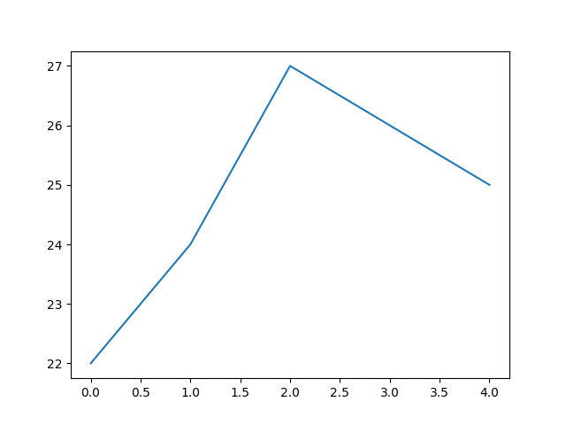
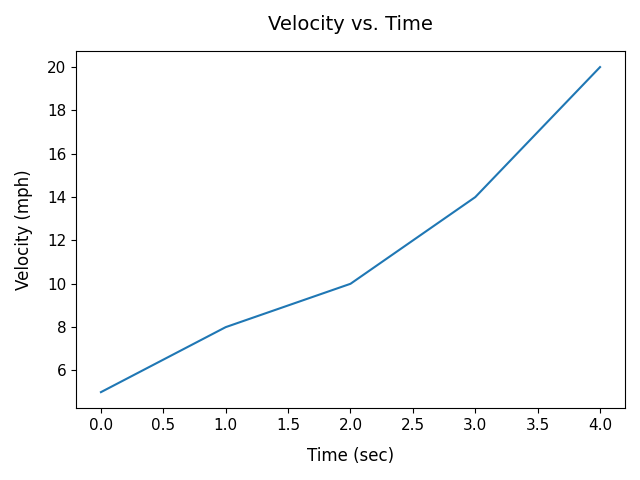
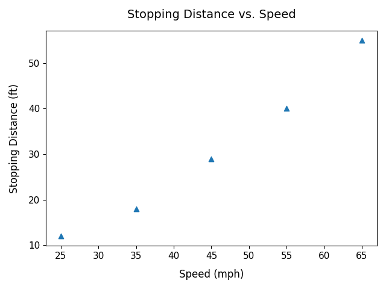
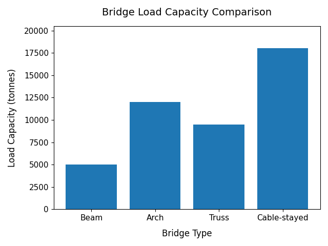
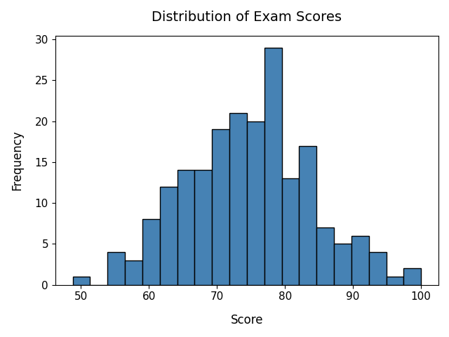
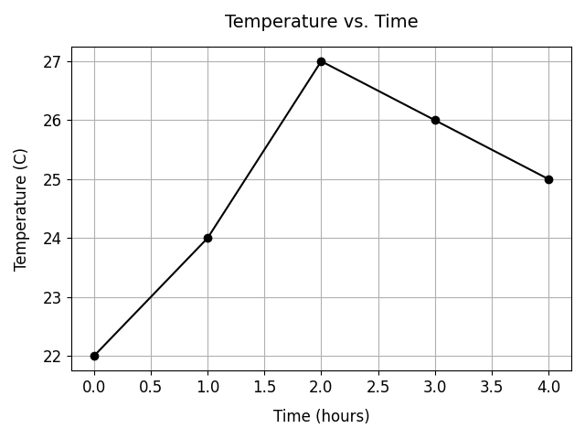
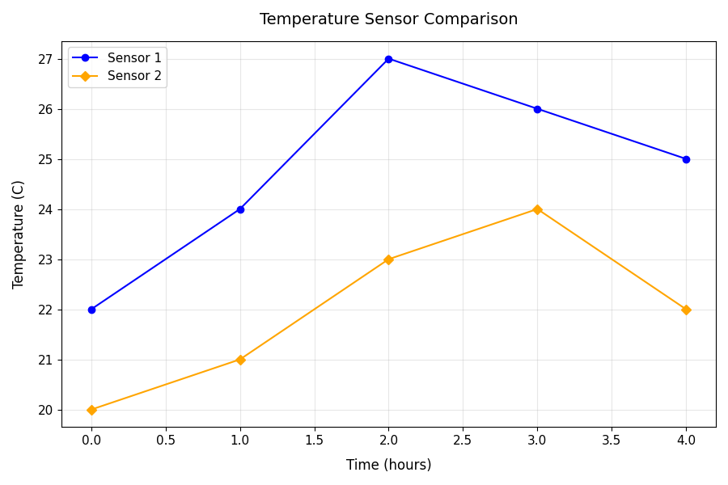
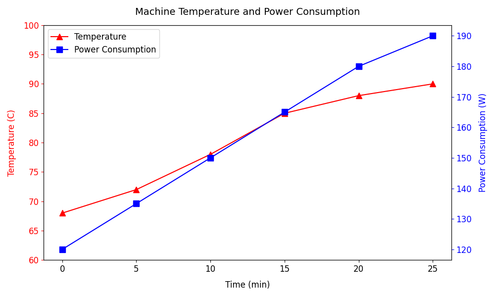
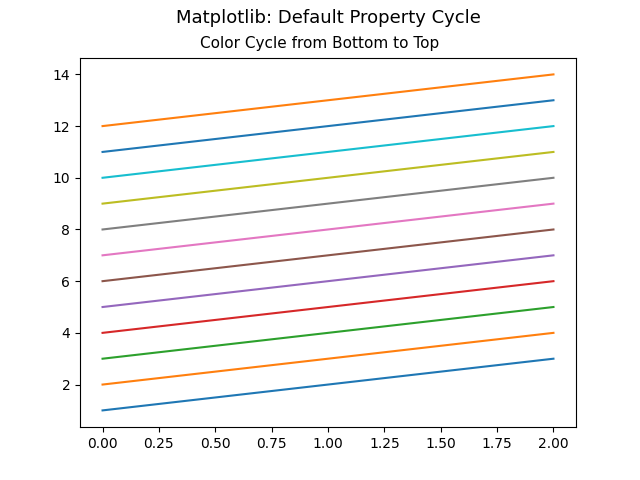

Sep 09, 2026 | 2978 words | 30 min read
11.1.1. PCMs: Data Analysis and Visualization#
This page introduces the topics that will be covered in the data analysis and
visualization unit. It includes and introduction to the numPy, pandas, and
matplotlib libraries, which are commonly used for data manipulation, analysis, and
visualization.
NumPy#
What is NumPy?#
The numPy library is one of the most
widely used Python libraries for numerical and scientific computing.
NumPy provides support for:
Large arrays and matrices
Fast mathematical calculations
Statistical operations
Scientific and engineering computations
numPy is commonly used in engineering, data science, physics, and machine learning
because it allows users to efficiently work with numerical data.
Why Engineers Use numPy#
Engineers frequently work with:
Sensor measurements
Experimental data
Simulation results
Mathematical models
Large numerical datasets
NumPy allows engineers to quickly perform calculations on entire datasets without using loops for every operation.
Installing NumPy#
python3 -m pip install numpy
Importing NumPy#
NumPy is commonly imported using the alias np.
# Import the numpy module
import numpy as np
Creating Arrays#
The primary data structure in NumPy is called an array.
A NumPy array stores multiple values in a single object and allows users to perform mathematical operations efficiently.
import numpy as np
# Create a simple array
arr = np.array([1, 2, 3, 4, 5])
print(arr)
# Output:
# [1 2 3 4 5]
Performing Mathematical Operations#
Mathematical operations can be applied to every element in an array at once.
import numpy as np
# Create an array
arr = np.array([1, 2, 3, 4, 5])
# Multiply each element by 2
result = arr * 2
print(result)
# Output:
# [ 2 4 6 8 10]
Additional Mathematical Operations#
import numpy as np
arr = np.array([10, 20, 30, 40])
# Addition
print(arr + 5)
# Subtraction
print(arr - 5)
# Multiplication
print(arr * 2)
# Division
print(arr / 10)
Array Properties#
NumPy arrays contain useful information about their structure.
import numpy as np
arr = np.array([1, 2, 3, 4, 5])
# Display array shape
print(arr.shape)
# Display number of dimensions
print(arr.ndim)
# Display data type
print(arr.dtype)
Common Array Properties#
Property |
Description |
|---|---|
|
Size of the array |
|
Number of dimensions |
|
Data type of array elements |
Creating Arrays with Built-In Functions#
NumPy provides several functions for quickly generating arrays.
Arrays of Zeros#
import numpy as np
zeros_arr = np.zeros(5)
print(zeros_arr)
# Output:
# [0. 0. 0. 0. 0.]
Arrays of Ones#
ones_arr = np.ones(5)
print(ones_arr)
# Output:
# [1. 1. 1. 1. 1.]
Creating a Range of Values#
range_arr = np.arange(0, 10, 2)
print(range_arr)
# Output:
# [0 2 4 6 8]
Multidimensional Arrays#
NumPy can create arrays with multiple dimensions.
import numpy as np
# Create a 2D array
matrix = np.array([
[1, 2, 3],
[4, 5, 6]
])
print(matrix)
# Output:
# [[1 2 3]
# [4 5 6]]
Indexing and Slicing Arrays#
Elements in an array can be accessed using indexes.
import numpy as np
arr = np.array([10, 20, 30, 40, 50])
# Access one element
print(arr[2])
# Output:
# 30
Slicing Arrays#
# Select multiple elements
print(arr[1:4])
# Output:
# [20 30 40]
Statistical Analysis with NumPy#
NumPy contains many useful statistical functions.
import numpy as np
data = np.array([12, 15, 18, 20, 22])
# Calculate the mean
print(np.mean(data))
# Output: 17.4
# Calculate the maximum value
print(np.max(data))
# Output: 22
# Calculate the minimum value
print(np.min(data))
# Output: 12
# Calculate the standard deviation round to 2 decimal places
print(round(np.std(data), 2))
# Output: 3.56
Common Statistical Functions#
Function |
Description |
|---|---|
|
Average value |
|
Largest value |
|
Smallest value |
|
Standard deviation |
Example Engineering Workflow#
Below is a simple example of how mechanical engineers might use NumPy to analyze vibration sensor data collected from a machine.
import numpy as np
# Vibration sensor measurements
vibration_data = np.array([0.12, 0.15, 0.11, 0.18, 0.14])
# Calculate average vibration
avg_vibration = np.mean(vibration_data)
print(avg_vibration)
# Output: 0.14
# Calculate maximum vibration
max_vibration = np.max(vibration_data)
print(max_vibration)
# Output: 0.18
This workflow demonstrates how NumPy can be used to:
Store numerical measurements
Perform mathematical calculations
Analyze engineering data
Summarize sensor measurements
NumPy vs Python Lists#
NumPy arrays are similar to Python lists, but they are optimized for numerical calculations.
Python List |
NumPy Array |
|---|---|
General-purpose storage |
Optimized for numerical data |
Slower for calculations |
Faster mathematical operations |
More flexible |
Better for scientific computing |
Common Beginner Mistakes#
Forgetting to Import NumPy#
# Incorrect
arr = np.array([1, 2, 3])
# Correct
import numpy as np
arr = np.array([1, 2, 3])
Using Parentheses Instead of Brackets#
# Incorrect
arr = np.array((1, 2, 3))
# Correct
arr = np.array([1, 2, 3])
pandas#
The pandas library is built off of the numpy library. Pandas uses NumPy arrays
internally to actually store the data values. It also adds a layer on top of NumPy that
includes:
Labels – row indices and column names, instead of just raw positional indices
Heterogeneous columns – a DataFrame can hold different data types in different columns (e.g., integers, strings, dates), whereas a plain NumPy array typically holds a single data type
Convenient operations – built-in tools for handling missing data, merging/joining datasets, grouping and aggregating, reading/writing CSV or Excel files, and more
NumPy gives you fast, efficient arrays of numbers, while Pandas wraps those arrays in a more user-friendly structure, like a spreadsheet, and adds labels, mixed data types, and higher-level tools for real-world data analysis. You will explore this more in pre-class assignment: 11.1.2 PCA: Data Manipulation.
Data Manipulation and Analysis#
Data manipulation and analysis refers to the process of organizing, cleaning, modifying, and analyzing data. Engineers, scientists, and data analysts use data manipulation to prepare raw data for calculations, visualization, modeling, and decision-making.
Common data manipulation tasks include:
Importing data from CSV or Excel files
Cleaning missing or incorrect values
Filtering rows and selecting columns
Sorting and organizing data
Calculating statistics such as averages or standard deviations
Combining multiple datasets
Creating new calculated columns
pandas and Data Analysis#
As we learned in the Python Foundations unit, Python libraries are collections of pre-written functions and tools that help programmers perform tasks without writing all code from scratch.
One of the most widely used libraries for data analysis and manipulation in Python is
the pandas library.
Pandas allows users to efficiently organize, analyze, filter, and manipulate data.
The primary data structure used in Pandas is called a DataFrame. A DataFrame stores data in rows and columns, similar to a spreadsheet or table.
pandas is commonly used for:
Reading data from CSV and Excel files
Organizing and cleaning data
Filtering and sorting data
Performing calculations and statistical analysis
Preparing data for graphs and visualizations
Why Engineers Use Pandas#
Engineers and scientists often collect large amounts of data from, for example:
Sensors
Laboratory experiments
Traffic monitoring systems
Environmental monitoring equipment
Manufacturing systems
Pandas helps engineers quickly organize and analyze this data using code instead of performing calculations manually in spreadsheets.
Installing Pandas#
python3 -m pip install pandas
Importing Pandas#
Pandas is commonly imported using the alias pd.
# Import the numpy module
import pandas as pd
Creating and Accessing a DataFrame#
Below is an example of creating a pandas DataFrame (df) and then selecting the Age
column and storing it in a new variable called ages.
import pandas as pd
# Create a simple DataFrame
data = {
"Name": ["John", "Anna", "Peter", "Linda"],
"Age": [25, 36, 29, 42],
"City": ["New York", "Paris", "Berlin", "London"],
}
df = pd.DataFrame(data)
# Display the DataFrame
print(df)
# Output:
# Name Age City
# 0 John 25 New York
# 1 Anna 36 Paris
# 2 Peter 29 Berlin
# 3 Linda 42 London
# Access a specific column
ages = df["Age"]
# Display the Age column
print(ages)
# Output:
# 0 25
# 1 36
# 2 29
# 3 42
# Name: Age, dtype: int64
Series vs. DataFrame#
Object |
Description |
|---|---|
Series |
A single column of data |
DataFrame |
A table containing multiple columns |
# DataFrame
print(type(df))
# Series
print(type(df["Age"]))
Creating a DataFrame#
import pandas as pd
# Create an empty DataFrame
df = pd.DataFrame()
Importing Data#
Pandas can import data from many file formats commonly used in engineering and scientific applications.
# Import data from a CSV file
df_1 = pd.read_csv("file_path.csv")
# Import data from an Excel file
df_2 = pd.read_excel("file_path.xlsx")
Viewing Data#
These functions help users quickly inspect the contents and structure of a DataFrame.
# Display the first 5 rows of a DataFrame
print(df.head())
# Display the first n rows of a DataFrame
print(df.head(n))
Display Column Names#
print(df.columns)
# Output:
# Index(['Name', 'Age', 'City'], dtype='object')
Display the Shape of a DataFrame#
print(df.shape)
# Output:
# (rows, columns)
# (4, 3)
Writing Data to a File#
After filtering and/or sorting data in a pandas DataFrame, you may want to export the resulting data to a new file so it can be shared with others for further analysis and visualization.
Write to CSV#
df.to_csv("output.csv", index=False)
Useful Options#
df.to_csv(
"output.csv",
index=False, # don't write row index in first column
columns=["A", "B"], # select specific columns
sep=",", # delimiter (default is comma)
na_rep="NA" # representation for missing values
)
Write to Text File#
Tab-separated File (.txt)#
When writing to a text file, you may want to separate columns by tabbing over.
df.to_csv("output.txt", sep="\t", index=False)
Custom Delimiter#
Sometimes you may want to separate columns using a specific delimeter. For example, a comma or pipe:
df.to_csv("output.txt", sep="|", index=False)
Write to Excel#
df.to_excel("output.xlsx", index=False)
Write to a Specific Sheet#
If there are multiple sheets in an Excel (.xlsx) file and you want to write data to a specific sheet, you can:
Specify an existing sheet name (e.g., “Sheet1”)
Write data to a new sheet by specifying a new sheet name (e.g., “new_sheet”)
with pd.ExcelWriter("output.xlsx", engine="openpyxl") as writer:
df.to_excel(writer, sheet_name="Sheet1", index=False)
Comparison of Files#
Format |
Function |
Common Use |
|---|---|---|
CSV |
to_csv() |
Data sharing, plotting |
TXT |
to_csv(sep=…) |
Custom-delimited files |
Excel |
to_excel() |
Reports, business use |
Pro Tip: If you are preparing data for matplotlib or analysis, stick with a CSV
file!! It is the simplest and most portable format.
Selecting Columns#
A DataFrame is made up of rows and columns. You can select columns by placing the column name(s) inside square brackets after the DataFrame name.
The general syntax is:
df["column_name"]
or
df[list_of_column_names]
The values inside the square brackets are passed to the DataFrame as an argument:
If a single column name is provided as a string, pandas returns a Series.
If a list of column names is provided, pandas returns a new DataFrame containing only those columns.
Select a Single Column#
# Select one column
ages = df["Age"]
print(ages)
In this example:
"Age"is a string containing the name of the column we want to select.df["Age"]passes that string as the argument to the DataFrame.The result is a pandas Series containing only the values from the Age column.
Select Multiple Columns#
# Select multiple columns
subset = df[["Name", "Age"]]
print(subset)
# Output:
# Name Age
# 0 John 25
# 1 Anna 36
# 2 Peter 29
# 3 Linda 42
When selecting multiple columns, the column names must be provided as a Python list:
["Name", "Age"]
Then the list is passed into the DataFrame:
df[["Name", "Age"]]
The syntax can look like it has “double brackets,” but each set of brackets has a different purpose:
Inner brackets -> create a Python list of column names:
Outer brackets -> select data from the DataFrame using that list:
df[ ... ]
Pandas uses the list to identify which columns to return. The result is a new DataFrame containing only the selected columns.
Creating New Columns#
New columns can be created using calculations or existing data.
# Create a new column
df["Speed_kph"] = df["Speed_mph"] * 1.60934
Example Applications#
Unit conversions
Engineering calculations
Sensor calibration
Efficiency calculations
Combining DataFrames#
The pd.merge() function joins pandas DataFrames on a common column, matching rows
where the values are equal.
import pandas as pd
# Use a dictionary-type object to initialize a pandas DataFrame
df1 = pd.DataFrame({
"ID": [1, 2, 3],
"Name": ["Alice", "Bob", "Charlie"]
})
df2 = pd.DataFrame({
"ID": [1, 2, 3],
"Score": [85, 92, 78]
})
# Combine on the shared "ID" column
combined = pd.merge(df1, df2, on="ID")
print(combined)
# Output
# ID Name Score
# 0 1 Alice 85
# 1 2 Bob 92
# 2 3 Charlie 78
Filtering Data#
Filtering allows users to select specific rows from a DataFrame based on a condition. This is useful when you only want to analyze data that meets certain criteria, such as selecting samples from a specific location, finding values above a threshold, or removing unwanted data.
The general syntax for filtering a DataFrame is:
filtered_df = df[df["Column_Name"] conditional_statement]
The filtering syntax has two parts:
Inner condition (df[“Column_Name”] conditional_statement)
df[“Column_Name”] selects the column that you want to evaluate.
The conditional statement compares each value in that column to a specified value.
This comparison creates a Boolean Series containing
TrueandFalsevalues.Rows where the condition is
Trueare kept, and rows where the condition isFalseare removed.
Outer DataFrame selection (
df[...])
The Boolean Series is placed inside the square brackets of the DataFrame.
Pandas uses the
TrueandFalsevalues to select the matching rows.
For example:
filtered_df = df[df["Age"] <= 30]
The condition df[“Age”] <= 30 checks every value in the Age column:
Age |
Condition ( |
|---|---|
25 |
True |
42 |
False |
30 |
True |
35 |
False |
Only rows with a True condition are returned in filtered_df.
Example 1: Filter Rows Using One Condition#
# Filter rows where Age is less than or equal to 30
young_df = df[df["Age"] <= 30]
print(young_df)
# Output:
# Name Age City
# 0 John 25 New York
# 2 Peter 29 Berlin
Example 2: Filter Rows Using Text Values#
# Filter rows where City is "New York"
new_york_df = df[df["City"] == "New York"]
print(new_york_df)
# Output:
# Name Age City
# 0 John 25 New York
Example 3: Filter Rows Using Multiple Conditions#
# Filter rows using multiple conditions
high_speed = df[(df["Speed"] > 60) & (df["Volume"] > 100)]
Common Conditional Operators#
Operator |
Meaning |
|---|---|
|
Greater than |
|
Less than |
|
Greater than or equal to |
|
Less than or equal to |
|
Equal to |
|
Not equal to |
Sorting Data#
Sorting organizes rows based on column values.
# Sort by Age column
sorted_df = df.sort_values(by="Age")
Sort in Descending Order#
# Sort by Age column in descending order
sorted_df = df.sort_values(by="Age", ascending=False)
Cleaning Data#
Cleaning data is one of the most important pandas skills because real-world datasets are often incomplete or messy.
Missing Data#
# Display missing values
print(df.isnull())
# Count missing values in each column
print(df.isnull().sum())
# Remove rows with missing values
clean_df = df.dropna()
# Replace missing values with 0
df["FlowRate"] = df["FlowRate"].fillna(0)
Removing Duplicate Data#
# Remove duplicate rows
df = df.drop_duplicates()
Renaming Columns#
# Rename a column
df = df.rename(columns={"Temp_C": "Temperature_C"})
Changing Data Types#
# Convert a column to float values
df["Pressure"] = df["Pressure"].astype(float)
Grouping and Aggregating Data#
Grouping data allows users to calculate statistics for categories within a dataset.
import pandas as pd
import numpy as np
# Create a dictionary called "data" with made-up values for 3 roadways
data = {
"Road": ["Main St", "Highway 1", "Ring Road", "Highway 1",
"Ring Road", "Main St", "Highway 1", "Ring Road",
"Main St", "Highway 1", "Ring Road", "Main St"],
"Speed": [65, 72, 68, 70,
35, 28, 42, 31,
55, 60, 58, 62]
}
# Initialize a pandas Dataframe (df) using the 'data' dictionary
df = pd.DataFrame(data)
# Calculate average speed by roadway
avg_speed = df.groupby("Road")["Speed"].mean()
print(avg_speed)
# Output:
# Road
# Highway 1 68.75
# Main St 34.00
# Ring Road 58.75
# Name: Speed, dtype: float64
Examples of Engineering Applications#
Average traffic speed by roadway
Average temperature by day
Average production output by machine
Basic Statistical Analysis#
Pandas can help summarize measurements and experimental data using statistical analysis tools.
print(df.mean())
print(df.max())
print(df.min())
print(df.std())
print(df.describe())
Common Statistical Terms#
Function |
Description |
|---|---|
|
Average value |
|
Largest value |
|
Smallest value |
|
Standard deviation (spread of data) |
|
Summary statistics for all numeric columns |
Common Beginner Mistakes#
Incorrect Filtering Syntax#
# Incorrect
df['City' == 'New York']
# Correct
df[df["City"] == "New York"]
Forgetting Double Brackets When Selecting Multiple Columns#
# Incorrect
df["Name", "Age"]
# Correct
df[["Name", "Age"]]
matplotlib#
What is Matplotlib?#
The matplotlib library is one of the
most widely used Python libraries for creating graphs and visualizations.
Matplotlib allows users to:
Create line graphs, bar charts, scatter plots, and histograms
Visualize trends and patterns in data
Customize graph titles, labels, legends, and colors
Present data in a professional and readable format
Matplotlib is commonly used in engineering, science, business, and data analysis to communicate information visually.
Installing Matplotlib#
python3 -m pip install matplotlib
Importing Matplotlib#
Matplotlib is a Python plotting library widely used in science and engineering
to create static charts and graphs. Its pyplot module provides a MATLAB-style
interface for creating figures, and is conventionally imported with the alias plt.
import matplotlib.pyplot as plt
Once imported, plt gives you access to all core plotting functions – for example,
plt.plot() for line charts, plt.bar() for bar charts, and plt.show() to
render the figure. In data science workflows, Matplotlib is often used alongside
NumPy and Pandas for visualizing processed data.
Why Engineers Use Matplotlib#
Engineers often work with large datasets collected from:
Sensors
Laboratory experiments
Simulations
Traffic monitoring systems
Environmental monitoring equipment
Graphs help engineers:
Identify trends and patterns
Compare datasets
Detect unusual behavior
Present results clearly to others
Common Plot Elements#
Professional engineering plots often include the following elements. For a review of Basic Chart Formatting Guidelines, refer to the Excel Spreadsheet Foundations materials. Then, follow along to learn how to incorporate these elements into your plots.
Element |
Purpose |
|---|---|
Title |
Describes the graph |
X-axis label |
Describes horizontal axis |
Y-axis label |
Describes vertical axis |
Legend |
Identifies plotted datasets |
Grid |
Improves readability |
Additionally, engineering plots should be readable. When creating plots in Python, be sure to increase the font size of the plot title, axis titles, and axis labels. See the examples below to learn how to adjust the font size of these plot components.
Creating a Simple Line Plot#
Line plots are commonly used to show trends over time.
import matplotlib.pyplot as plt
# Example data
time = [0, 1, 2, 3, 4]
temperature = [22, 24, 27, 26, 25]
# Create a line plot
plt.plot(time, temperature)
# Display the graph
plt.show()

Fig. 11.1 A bare line plot with no axis labels or title. Values on the y-axis run from about 22 to 27 and the x-axis from 0 to 4. The line rises from 22 at 0 to 24 at 1, peaks at 27 at 2, then declines to 26 at 3 and 25 at 4. Because nothing is labeled, a reader cannot tell what is being measured or in what units.#
Adding Labels and a Title#
Professional engineering graphs should include descriptive labels and titles. The
tight_layout() function and label padding are demonstrated in this example.
These are useful whenever elements in your plot are getting clipped or overlapping.
import matplotlib.pyplot as plt
# Example data
time = [0, 1, 2, 3, 4]
velocity = [5, 8, 10, 14, 20]
# Create a line plot
plt.plot(time, velocity)
# Add labels and title
plt.xlabel("Time (sec)", fontsize=12,
labelpad=10) # Include padding for labels
plt.ylabel("Velocity (mph)", fontsize=12,
labelpad=10)
plt.title("Velocity vs. Time", fontsize=14,
pad=15) # Include padding for title
# Increase tick label size
plt.tick_params(size=11)
# Apply tight layout to prevent label clipping
plt.tight_layout()
# Display the graph
plt.show()

Fig. 11.2 The same kind of plot as above, now with a title and labeled axes. The x-axis is labeled “Time (sec)” and runs from 0 to 4; the y-axis is labeled “Velocity (mph)” and runs from about 5 to 20. A single blue line rises from 5 mph at 0 sec to 8 mph at 1 sec, 10 mph at 2 sec, 14 mph at 3 sec, and 20 mph at 4 sec, with the steepest rise between 3 and 4 sec.#
Plotting Over Dates/Times#
After importing data from a CSV or Excel file into a Pandas DataFrame, it is recommended
that any date or time data columns must be converted using the pd.to_datetime()
function before plotting. This ensures Matplotlib treats the date or time column as
plain strings and prevents the x-axis from looking broken or rendering each date as a
raw text label with no intelligent spacing or formatting.
Below are examples of data and time conversions.
Date Conversion Example#
import pandas as pd
import matplotlib.pyplot as plt
water_data = pd.read_csv("water_level_data.csv")
# Display the first 10 rows
print(water_data.head(10))
# Output
# Date Water_Level_ft
# 0 2024-12-01 4.4
# 1 2024-12-02 3.8
# 2 2024-12-03 3.6
# 3 2025-01-01 5.1
# 4 2025-01-02 5.4
# 5 2025-01-03 4.9
# 6 2025-02-01 6.2
# 7 2025-02-02 6.5
# 8 2025-02-03 5.8
# 9 2025-03-01 4.3
# Convert Date column to datetime
df["Date"] = pd.to_datetime(df["Date"])
# Filter for 2025 data rows
flitered_water_data = df[df["Date"].dt.year == 2025]
# Display the first 5 rows
print(filtered_water_data.head())
# Output
# Date Water_Level_ft
# 0 2025-01-01 5.1
# 1 2025-01-02 5.4
# 2 2025-01-03 4.9
# 3 2025-02-01 6.2
# 4 2025-02-02 6.5
Non-Standard Format Dates#
If your dates use a non-standard format (e.g.
"01/03/24"), pass the format explicitly to avoid misinterpretation:
df["Date"] = pd.to_datetime(df["Date"], format="%m/%d/%y")
Use
plt.xticks(rotation=45)if date labels overlap on the x-axis.Add
marker="o"to make individual readings visible on the line.
Time Conversion Example#
import pandas as pd
import matplotlib.pyplot as plt
data = {
"Time": ["06:00:00", "07:00:00", "08:00:00", "09:00:00",
"10:00:00", "11:00:00", "12:00:00", "13:00:00",
"14:00:00", "15:00:00", "16:00:00", "17:00:00"],
"Water_Level_ft": [3.2, 3.5, 3.9, 4.1,
4.4, 4.6, 4.5, 4.3,
4.1, 3.8, 3.5, 3.2]
}
sensor_data = pd.DataFrame(data)
# Convert Time column to datetime
sensor_data["Time"] = pd.to_datetime(sensor_data["Time"], format="%H:%M:%S")
# Filter for readings at or above 4.0 ft
high_water = sensor_data[sensor_data["Water_Level_ft"] >= 4.0]
print(high_water.head())
# Output
# Time Water_Level_ft
# 0 09:00:00 4.1
# 1 10:00:00 4.4
# 2 11:00:00 4.6
# 3 12:00:00 4.5
# 4 13:00:00 4.3
Creating a Scatter Plot#
Scatter plots are useful for displaying relationships between variables. The default
marker shape for scatter plots is a circle, but there are many built-in data marker
shapes in matplotlib to choose from. Data markers are used for both scatter and line
plots (see examples of line plots with markers below).
Marker code |
Shape |
Common use case |
|---|---|---|
|
Circle |
General data points |
|
Square |
Categorical groups |
|
Triangle up |
Positive deviation |
|
Triangle down |
Negative deviation |
|
Diamond |
Highlighted outliers |
|
Thin diamond |
Dense scatter plots |
|
Plus |
Overlay markers |
|
Cross |
Excluded/invalid points |
|
Star |
Special points of interest |
|
Pentagon |
Multi-class datasets |
|
Hexagon |
Binned data |
|
Point |
Large datasets (minimal ink) |
You pass these directly to the marker parameter:
plt.scatter(x, y, marker='^')
import matplotlib.pyplot as plt
# Example data
speed = [25, 35, 45, 55, 65]
stopping_distance = [12, 18, 29, 40, 55]
# Create a scatter plot
plt.scatter(speed, stopping_distance, marker='^', markersize=20)
# Add labels and title
plt.xlabel("Speed (mph)", fontsize=12, labelpad=10)
plt.ylabel("Stopping Distance (ft)", fontsize=12, labelpad=10)
plt.title("Stopping Distance vs. Speed", fontsize=14, pad=15)
plt.tick_params(axis='both', labelsize=11)
# Apply tight layout to prevent label clipping
plt.tight_layout()
# Display the graph
plt.show()

Fig. 11.3 The x-axis is labeled “Speed (mph)” with points at about 25, 35, 45, 55, and 65 mph; the y-axis is labeled “Stopping Distance (ft)” with corresponding values of about 12, 18, 29, 40, and 55 feet. Each point is one measured pair. The upward trend steepens at higher speeds, so stopping distance grows faster than speed does.#
Creating a Bar Chart#
Bar charts are useful for comparing categories. This example includes an adjustment to the y-axis limits.
import matplotlib.pyplot as plt
# Example data
bridge_types = ["Beam", "Arch", "Truss", "Cable-stayed"]
load_capacity = [5000, 12000, 9500, 18000] # in tonnes
# Create a bar chart
plt.bar(bridge_types, load_capacity)
# Add labels and title
plt.xlabel("Bridge Type", fontsize=12, labelpad=10)
plt.ylabel("Load Capacity (tonnes)", fontsize=12, labelpad=10)
plt.title("Bridge Load Capacity Comparison",
fontsize=14, pad=15)
plt.tick_params(axis='both', labelsize=11)
plt.ylim(0, 20500) # Adjust y-axis limits
# Apply tight layout to prevent label clipping
plt.tight_layout()
# Display the graph
plt.show()

Fig. 11.4 The x-axis lists four bridge types (Beam, Arch, Truss, Cable-stayed) and the y-axis shows load capacity in tonnes. Beam is lowest at about 5,000 tonnes, Truss is around 9,500 tonnes, Arch is about 12,000 tonnes, and Cable-stayed is highest at roughly 18,000 tonnes. Bar charts suit this data because the categories are discrete rather than continuous.#
Creating a Histogram#
As we learned in our Excel unit, histograms display the distribution of data. Follow along by plotting data from the ‘exam_scores.csv’ file.
import matplotlib.pyplot as plt
import numpy as np
import pandas as pd
# Load the exam scores from the CSV file
exam_data = pd.read_csv('exam_scores.csv')
exam_scores = exam_data['Score'].values
# Create histogram
plt.hist(exam_scores, bins=20, edgecolor='black', color='steelblue')
# Add labels and title
plt.xlabel("Score", fontsize=12, labelpad=12)
plt.ylabel("Frequency", fontsize=12, labelpad=12)
plt.title("Distribution of Exam Scores", fontsize=14, pad=15)
plt.tick_params(axis='both', labelsize=11)
plt.tight_layout()
plt.show()

Fig. 11.5 The x-axis is labeled “Score” and the y-axis “Frequency”. Scores range from about 50 to 100. Most cluster between 65 and 85, with the tallest bars in the mid-to-high 70s and fewer scores at the low end (50 to 60) and high end (90 to 100). A histogram shows how one continuous variable is distributed, unlike the bar chart above, which compares separate categories.#
Adding a Grid#
Grids can make graphs easier to read.
import matplotlib.pyplot as plt
# Example data
time = [0, 1, 2, 3, 4]
temperature = [22, 24, 27, 26, 25]
# Create a black line plot with data point markers
plt.plot(time, temperature, marker="o", color="black")
# Add labels and title
plt.xlabel("Time (hours)", fontsize=12, labelpad=10)
plt.ylabel("Temperature (C)", fontsize=12, labelpad=10)
plt.title("Temperature vs. Time", fontsize=14, pad=15)
# Adjust axis tick label size
plt.tick_params(axis="both", labelsize=12)
# Add a grid
plt.grid()
plt.tight_layout()
plt.show()

Fig. 11.6 The x-axis is labeled “Time (hours)” and the y-axis Temperature (C). The line
rises from 22 degrees C at hour 0 to 24 degrees C at hour 1, peaks at 27 degrees
C at hour 2, then falls to 26 degrees C at hour 3 and 25 degrees C at hour 4.
Gridlines run across the plot, making it easier to read a value off either axis.#
Plotting Multiple Data Sets#
Multiple datasets can be displayed on the same graph. Because there are no colors specified for each line plot, Python uses the default Matplotlib colors. This example also demonstrates how to adjust figure size.
When plotting multiple datasets, remember to include a legend to identify each dataset. By default, Matplotlib places the legend in the upper-right corner of the figure, but different legend locations can be specified (see example below) to improve readability and avoid covering important data.
import matplotlib.pyplot as plt
# Example data
time = [0, 1, 2, 3, 4]
sensor_1 = [22, 24, 27, 26, 25]
sensor_2 = [20, 21, 23, 24, 22]
# Set figure size
plt.figure(figsize=(10, 5))
# Plot both datasets as line plots with different data markers
plt.plot(time, sensor_1, color="blue",
marker="o", label="Sensor 1")
plt.plot(time, sensor_2, color="orange",
marker="s", label="Sensor 2")
# Add labels and title
plt.xlabel("Time (hours)", fontsize=12)
plt.ylabel("Temperature (C)", fontsize=12)
plt.title("Temperature Sensor Comparison", fontsize=14)
plt.tick_params(axis="both", labelsize=12)
plt.legend(fontsize=12, loc="upper left")
plt.tight_layout()
plt.show()

Fig. 11.7 Two data series on one set of axes, with the x-axis labeled “Time (hours)” and
the y-axis Temperature (C). Sensor 1 (blue, with markers) starts at 22 degrees
C, rises to 24 at hour 1, peaks at 27 at hour 2, then falls to 26 at hour 3 and
25 at hour 4. Sensor 2 (orange, with markers) starts at 20 degrees C and climbs
to 21, 23, and 24 degrees C at hours 1, 2, and 3 before dropping to 22 at hour 4.
A legend in the upper-left corner identifies the two lines. Sensor 1 reads
warmer than Sensor 2 at every time point.#
Plotting Multiple Data Sets with Two Y-Axes#
Sometimes engineers need to compare two variables that use different units or scales. In these cases, a graph can use two y-axes.
The example below compares machine temperature and power consumption during operation.
import matplotlib.pyplot as plt
# Example data
time = [0, 5, 10, 15, 20, 25]
temperature = [68, 72, 78, 85, 88, 90]
power = [120, 135, 150, 165, 180, 190]
# Create figure and first axis
fig, ax1 = plt.subplots(figsize=(10, 6))
# Plot temperature data as a red line plot with circle data markers
ax1.plot(time, temperature, marker='^', color='red', markersize=8)
# Label first data series axes and add color to match the data series
ax1.set_ylabel("Temperature (C)", fontsize=12, color='red', labelpad=10)
ax1.set_xlabel("Time (min)", fontsize=12, labelpad=10)
# Y-axis ticks red, X-axis ticks black -- must set separately
ax1.tick_params(axis="y", labelsize=12, colors='red')
ax1.tick_params(axis="x", labelsize=12, colors='black')
# Set y-axis limits ('Temperature (C)')
ax1.set_ylim(60, 100)
# Create second y-axis
ax2 = ax1.twinx()
# Plot power data as a blue line plot with data markers
ax2.plot(time, power, marker='s', color='blue', markersize=8)
# Label second y-axis and add color to match the data series
ax2.set_ylabel("Power Consumption (W)", fontsize=12, color='blue', labelpad=10)
# Y-axis ticks blue -- no need to touch x-axis on ax2 (it's shared with ax1)
ax2.tick_params(axis="y", labelsize=12, colors='blue')
# Add title
plt.title("Machine Temperature and Power Consumption", fontsize=14, pad=15)
# Insert legend for both data series in the upper left corner of the plot
plt.legend([ax1.lines[0], ax2.lines[0]], ["Temperature", "Power Consumption"], loc="upper left", fontsize=12)
plt.tight_layout()
plt.show()

Fig. 11.8 The x-axis represents time in minutes (0, 5, 10, 15, 20, 25). The left y-axis shows temperature, rising from about 68 to 90 degrees C (blue line). The right y-axis shows power consumption, rising from about 120 to 190 W (red line). Both climb steadily, with a sharper rise between 10 and 15 minutes. Two y-axes let quantities in different units share one x-axis, which would be unreadable on a single scale.#
Plot Colors#
The table displays Matplotlib’s 8 single-letter base colors. You can also pass full hex strings like “#4682b4”, CSS named colors like “steelblue”, or normalized RGB tuples like (0.27, 0.51, 0.71) directly to any color parameter.
You pass these directly to the color parameter:
plt.scatter(x, y, marker="^", color="r")
plt.plot(x, y, marker="o", color="green")
plt.plot(x, y, color="#0000FF")
Color code |
Name |
Hex |
|---|---|---|
|
Blue |
|
|
Green |
|
|
Red |
|
|
Cyan |
|
|
Magenta |
|
|
Yellow |
|
|
Black |
|
|
White |
|
Default Color Cycle (matplotlib)#
When you plot multiple datasets without specifying colors, Matplotlib cycles through these:
Index |
Hex Code |
Color Name |
|---|---|---|
1 |
#1f77b4 |
muted blue |
2 |
#ff7f0e |
orange |
3 |
#2ca02c |
green |
4 |
#d62728 |
red |
5 |
#9467bd |
purple |
6 |
#8c564b |
brown |
7 |
#e377c2 |
pink |
8 |
#7f7f7f |
gray |
9 |
#bcbd22 |
olive |
10 |
#17becf |
cyan |
This is called the default property cycle (axes.prop_cycle). It automatically applies to:
plt.plot() (lines)
plt.scatter()
other multi-series plots
After 10 datasets, the color cycle repeats from the beginning.
Color Cycle Example#
import matplotlib.pyplot as plt
for i in range(12):
plt.plot([0, 1, 2], [j + i for j in [1, 2, 3]])
plt.title("Matplotlib: Default Property Cycle", fontsize=13, pad=25)
# Add a subtitle and adjust vertical height on plot
plt.suptitle("Color Cycle from Bottom to Top", fontsize=11, y=0.925)
plt.show()

Fig. 11.9 Twelve evenly spaced parallel lines rise from left (x = 0) to right (x = 2), stacked from about y = 1 at the bottom to y = 14 at the top. Read from the bottom up, the colors follow Matplotlib’s default cycle: blue, orange, green, red, purple, brown, pink, gray, olive, cyan. The cycle has only ten colors, so the eleventh and twelfth lines repeat blue and orange. This is why plots with more than ten series reuse colors unless you set them yourself.#
Common Beginner Mistakes#
Forgetting to Display the Plot#
# Incorrect
plt.plot(x, y)
# Correct
plt.plot(x, y)
plt.show()
Missing Axis Labels#
# Less Informative
plt.plot(time, temperature)
# Better Practice
plt.plot(time, temperature)
plt.xlabel("Time (hours)")
plt.ylabel("Temperature (C)")
plt.title("Temperature vs. Time")
Key Takeaways#
Overall, matplotlib.pyplot can be used to …
Visualize engineering measurements
Monitor system performance over time
Create professional-quality graphs
Communicate experimental or sensor data clearly